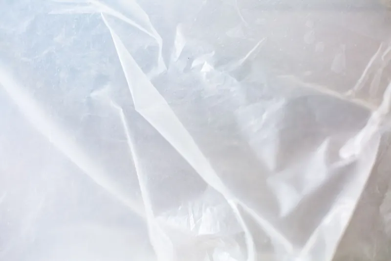

Quick Answers
How thick should a crawl space vapor barrier be?
Heavier than the bare minimum if anyone will crawl on it. DOE's crawl space guide calls for at least 10 mil poly, or a cross-laminated, puncture-resistant 6 mil sheet. Southeast builders written up in trade press have used 15 and 20 mil material where foot traffic and durability matter.
What does code require before the vents can close?
IRC R408.3 lets vents go when the dirt is covered by a continuous Class I vapor retarder with seams lapped 6 inches and sealed, and edges run at least 6 inches up the wall. The crawl also needs a drying method: exhaust, conditioned supply air, or a dehumidifier sized to the code.
Is encapsulation worth it in a humid climate?
The research says yes. When DOE's Building America teams compared crawl types, the sealed and conditioned ones used 15 to 18 percent less energy for heating and cooling than vented ones, and their humidity dropped by more than 20 percent. Drier framing under the house matters as much as the energy number.
Signs Your Crawl Space Needs a Barrier
- An earthy or musty smell inside, strongest in summer.
- Bare dirt, or torn and patchy plastic with soil showing through.
- Water beading on ducts, pipes or the underside of the subfloor.
- White fuzz, dark staining or mold spots on the joists.
- Floor insulation sagging or lying on the ground.
- Puddles after heavy rain, which means drainage work comes first.
How Encapsulation Works
A sealed crawl is a system. The liner stops ground moisture, closed vents and insulated walls keep out humid summer air, and a drying method holds humidity down. DOE's crawl space guide warns that simply shutting vents without the other pieces can make moisture worse.

Crawl space repair and cleanout
Debris and failed batts come out. Water entry gets dealt with before any plastic goes down, through grading, gutters, drains or a sump. If we find rot or sagging framing, we show you so a structural contractor can address it.
Lay and seal the liner
Seams overlap at least 6 inches and get taped, and the edges run at least 6 inches up the foundation and seal to it. Building Science Corporation carries the cover up piers and posts as well, so no bare soil or block is left around supports.
Close vents and insulate the walls
Vents are blocked and sealed, and the perimeter walls and band joist get closed cell foam, as described on our crawl space insulation page. A strip stays bare at the top of the wall for termite inspections.
Add the drying method
Code offers three main choices for an existing home: continuous exhaust at 1 cfm per 50 square feet with an air path to the house, conditioned supply air at the same rate with a return path, or dehumidification of at least 70 pints a day for each 1,000 square feet of crawl floor.
Watch the numbers
DOE's guide targets 30 to 50 percent relative humidity and wood moisture below 17 percent. A simple humidity gauge in the crawl tells you whether the system is keeping up.
| Liner | Where it fits |
|---|---|
| 6 mil cross-laminated poly | Meets DOE's guide when reinforced and puncture resistant; light traffic |
| 10 mil poly | DOE's minimum for plain sheet; a common middle choice |
| 15 to 20 mil liner | Used by Southeast builders where people store things or service equipment often |
Encapsulation Cost in Knoxville
Floor area drives most of the cost, followed by liner thickness, pier count, crawl height, water work, wall foam and the dehumidifier with its drain and outlet. These national guide ranges were checked in October 2026 and are not our prices.
| Measure | National range | Source |
|---|---|---|
| Encapsulation project | $1,500 to $15,000, average about $5,500 | This Old House, March 2026 |
| Per square foot | $3 low, $7 average, $10 high | This Old House, March 2026 |
| Basic encapsulation | $2 to $4 per sq ft | HomeAdvisor, 2025 |
| Extensive encapsulation | $3 to $10 per sq ft | HomeAdvisor, 2025 |
| Crawl space repair | $2,000 to $15,000 | Fixr |
For scale, a 1,600 square foot crawl at HomeAdvisor's basic rate lands around $3,200 to $6,400, and HomeAdvisor says labor makes up 50 to 70 percent of a typical project. Compare more jobs in our insulation cost guide, or call (865) 564-7823 for a free estimate built on your crawl's real measurements.
Why East Tennessee Crawls Stay Damp
Vents were supposed to dry crawl spaces out. DOE's Building America researchers found the reverse in humid climates: outdoor summer air is often wetter than the air already under the house, so every open vent adds moisture. That work helped shape the unvented crawl rules in IRC R408.3 in 2009 and 2012.
Knoxville's air is rarely dry. Average relative humidity runs about 71.5 percent over the year and climbs near 76 percent in August and September, the stretch when vented crawls take on the most moisture.
What the Free Encapsulation Estimate Includes
- Floor area, wall height and pier count, measured in the crawl.
- Humidity and wood moisture readings, plus a check of the existing plastic.
- A search for water entry, low spots and grading or gutter problems outside.
- A note of every fuel-burning appliance and how it vents.
- A written price with liner choices side by side and the drying method spelled out.
Vapor Barrier and Encapsulation FAQ
Related Services
- Crawl space insulation: closed cell foam on the perimeter walls that a sealed crawl requires.
- Insulation removal: clearing wet, moldy or fallen batts before the liner goes in.
- Rim joist insulation: sealing the band joist, one of the leakiest spots above any crawl.
Where We Do This Most
- Bearden: Sequoyah Hills sits on a peninsula with the Tennessee River on three sides, and some of its homes date back to the 1920s.
- Lenoir City: the river and TVA lakes form its southern edge, and the weather service names it in valley fog advisories.
- Gatlinburg: about 58 inches of precipitation a year falls on cabins tucked into steep mountain slopes.
- Sevierville: only about 46 percent of homes are detached houses, and rental cabins sitting empty between guests can turn musty fast.
- Maryville: 14 percent of homes were built before 1950, and houses that age often need crawl space repair before a liner goes down.
Dry Out the Space Under Your Floor
Bring us the smell, the stains or the puddles, and we will measure, take readings and write up the liner and drying setup that fits. Call (865) 564-7823 for your free estimate on crawl space encapsulation.